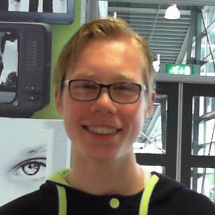
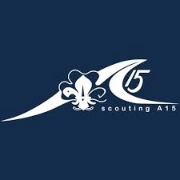
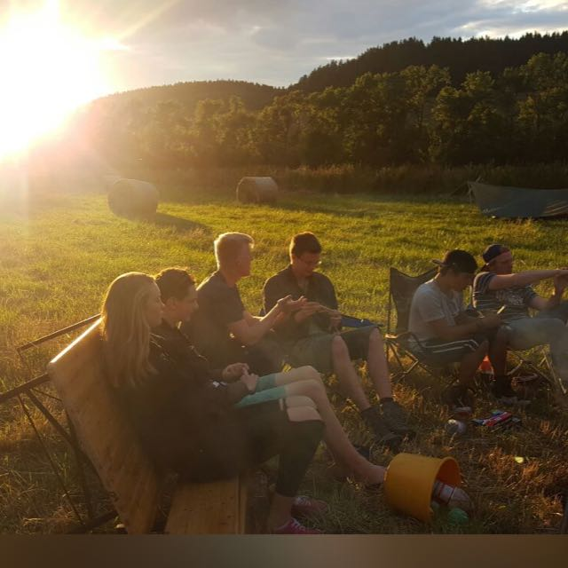

Curriculum Vitae
Mijn werkervaring
Ik werk nu bij de Dirk van den Broek. Ook heb ik veel vrijwilligers werk gedaan bij de scouting zoals helpen met het organiseren van de sinterklaas intochten, en helpen met overnachtingen van andere speltaken, maar ook bij de organisatie van koningsdag en koninginnendag
Wie ben ik
  Ik ben Quinten 16 jaar oud. Ik zit op het Da Vinci in Gorinchem en hier leer ik alles om een applicatieontwikkelaar te worden. Mijn hobbies zijn gamen, naar scouting gaan, en gezellige dingen doen met mijn vrienden.